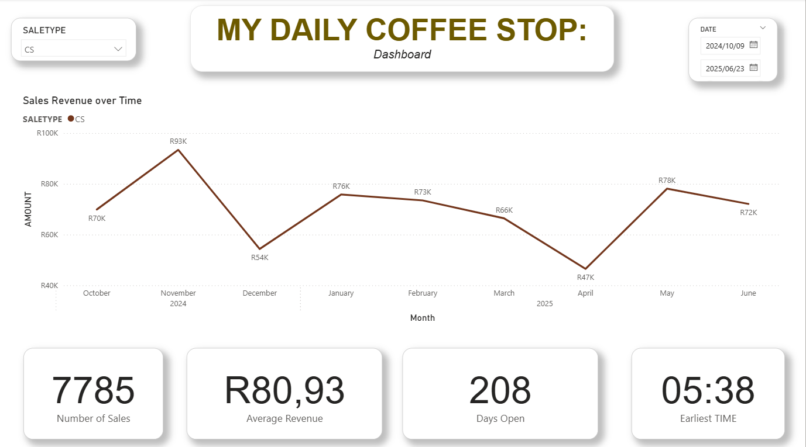

End-to-end analytics for a local café in Klerksdorp: profitability heatmaps, demand trends, and daily ops insight.
Delivered Nov 2024
Power BIPythonSQLOps enablement
Outcome
We built a lightweight data pipeline and an executive-friendly Power BI dashboard that surfaces
when sales peak, what sells, and how sales types trend—so the owner could plan staff,
tweak offerings, and track progress daily.
peaks by hour/dayavg spend / txsaletype mix
Client Context
My Daily Coffee Stop operates at break-even with inconsistent performance across periods. New ownership wanted
clear visibility into sales dynamics to reposition as the go-to morning spot in Klerksdorp. :contentReference[oaicite:0]{index=0}
Context & Outcome
Context
This was a DataNova engagement during a transfer of ownership. The new owner wanted to understand the
analytical value of the business—when the café truly comes alive, which sale types carry the day,
and how seasonality shapes demand. I captured a clean snapshot of the sales window, built an interactive view,
and we explored the story together in a live session.
What I built
Lightweight pipeline → cleaned CSV with features (hour, day, month, saletype).
Power BI dashboard → revenue over time, KPIs, slicers (date & saletype).
Plotly heatmap → profit concentration by hour×day for hotspot detection.
Guided walkthrough → we clicked around together and I narrated patterns and levers.
Profitability Heatmap
Interactive view of profit concentration across hours and days. Hover to inspect, drag to zoom,
and scan for repeatable “hot” bands.

Power BI snapshot used during the client session. Slicers let the owner filter by date and sale type,
while KPIs ground the conversation (total sales, average revenue, days open, earliest time).
Results & Decisions Enabled
Hotspot awareness
Clear identification of peak hours and seasonal patterns. Owner now times promos and loyalty nudges
to ride natural demand instead of fighting it.
Sharper offers
Sale-type mix and average spend trends informed which bundles to push and when—turning quiet slots into tests
rather than unknowns.
Shared language
A single dashboard became the daily touchpoint: same numbers, same view, faster decisions—without extra ops burden.
Problem
What was missing
Despite daily transaction capture, there was no structured analysis—no view of peak times, spend per ticket,
or performance by SALETYPE. Decisions on pricing, staffing, and bundles were guesswork. :contentReference[oaicite:1]{index=1}
Key questions
When do traffic and revenue peak by hour and day?
How does average spend per transaction evolve?
How do SALETYPE categories (cash vs other) perform over time?
Where are the underperforming slots we can optimize?
Approach
Phase 1 — Exploration
We profiled the raw CSV in Excel (ranges, zero/odd values, time coverage), documented questions, and drafted
a simple analysis plan to guide the build. :contentReference[oaicite:2]{index=2}
data familiarizationAMOUNT checks
Phase 2 — Wrangling
Built a Pandas cleaning pipeline: normalize SALETYPE, remove zero/negative AMOUNT,
fix DATE/TIME, and create Hour, DayOfWeek, and combined
DateTime features. Output: cleaned_mydaily_data.csv. :contentReference[oaicite:3]{index=3}
pandasfeature engineering
Phase 3 — BI & Story
Modeled the cleaned CSV in Power BI with “Sales Over Time”, hourly peak detection, and mix by
SALETYPE. Organized a simple, clean layout and delivered a short demo for the owner. :contentReference[oaicite:4]{index=4}
Power BI layoutslicers
What changed
From daily noise to daily signal
The owner can open one dashboard each morning to see yesterday’s revenue, busiest hours, and sales mix—
and adjust staff and prep accordingly.
Questions → measurable levers
Peak-hour slots, typical basket size, and SALETYPE trends became trackable levers—supporting
pricing experiments and bundle tests.
Foundation for iteration
The pipeline + model are simple by design, making it easy to add inventory cost, loyalty, or promo effects
in the next iteration.
Scope & assumptions
Use existing POS export (CSV) as source of truth.
Focus on sales dynamics, not full cost accounting (this is planned for v2).
Keep stack pragmatic: Excel → Python (Pandas) → Power BI.
Risks & mitigations
Data entry anomalies → cleaning rules + outlier flags.